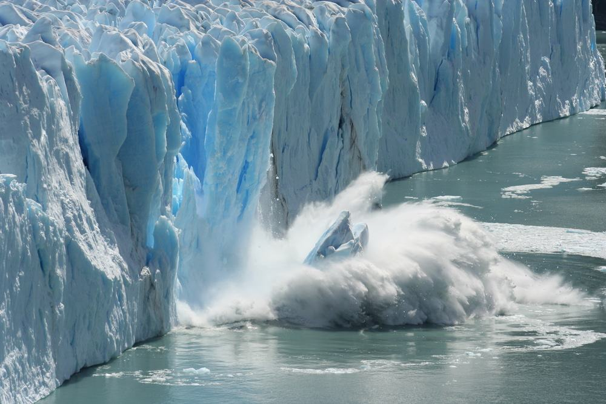
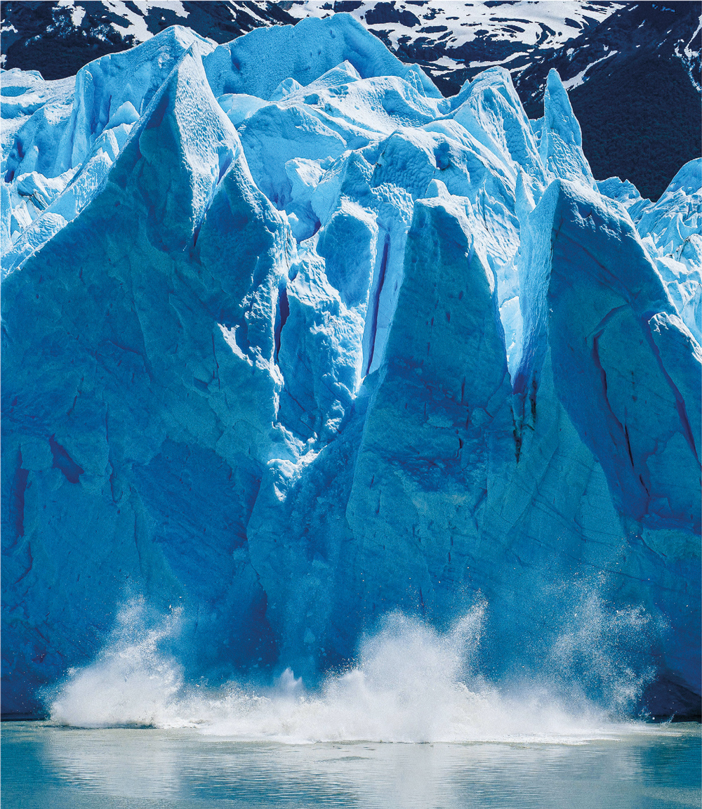

Por que o oceano é essencial?
Regula o Clima
Os oceanos absorvem calor e CO₂, ajudando a equilibrar o clima do planeta.
Sustenta a Vida
Mais de 70% do oxigênio que respiramos vem dos oceanos e das algas marinhas.
Fonte de Recursos
Os oceanos oferecem alimento, energia e oportunidades de pesquisa e inovação.
O impacto das Mudanças Climáticas
O aumento da temperatura global está derretendo geleiras, elevando o nível dos mares e ameaçando ecossistemas marinhos.


🌱 Ações que Podemos Fazer no Nosso Território:
- ♻️ Reduzir o uso de plásticos descartáveis e incentivar a reciclagem.
- 🚿 Economizar água em casa e promover o uso consciente nas escolas.
- 🌊 Participar de campanhas de limpeza de rios, praias e lagos locais.
- 📲 Usar tecnologia para monitorar e divulgar dados sobre qualidade da água (p.ex.: AquaTech).
🎯 Objetivo do AquaTech
O AquaTech tem como objetivo integrar tecnologia e ciência para monitoramento contínuo da qualidade da água em rios, lagos e zonas costeiras, apoiando ações de preservação e tomada de decisão.
💡 Por que usar o AquaTech?
O AquaTech permite detecção precoce de alterações nos parâmetros (pH, turbidez, temperatura, nível do mar), gerando dados acionáveis para comunidades, escolas e gestores. É uma solução acessível e escalável para fortalecer a cultura oceânica local.
🌍 Impacto e Benefícios
- Geração de dados para tomada de decisão ambiental.
- Incentivo à educação ambiental e práticas sustentáveis.
- Integração com sensores e IoT para monitoramento remoto.
- Apoio a políticas públicas e ações comunitárias.
AquaTech — Monitoramento Inteligente (Simulação)
Painel de leitura de sensores simulados de pH, turbidez e temperatura.